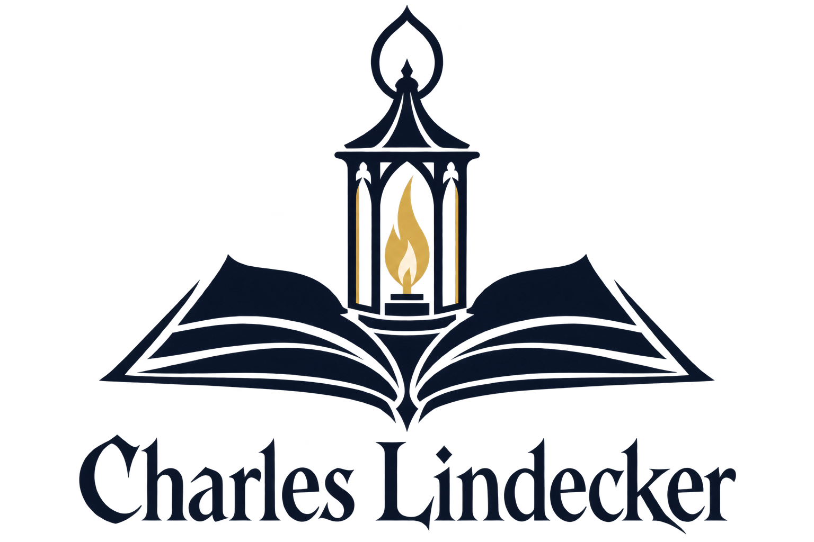

Le livre et la lanterne.
La connaissance pour comprendre. Une lumière pour avancer dans l’obscurité.

Variante minimaliste, touche gothique · PNG sur fond transparent · 1536 × 1024 px
Télécharger le PNG
Voir le prompt ImageGen
Version précédente